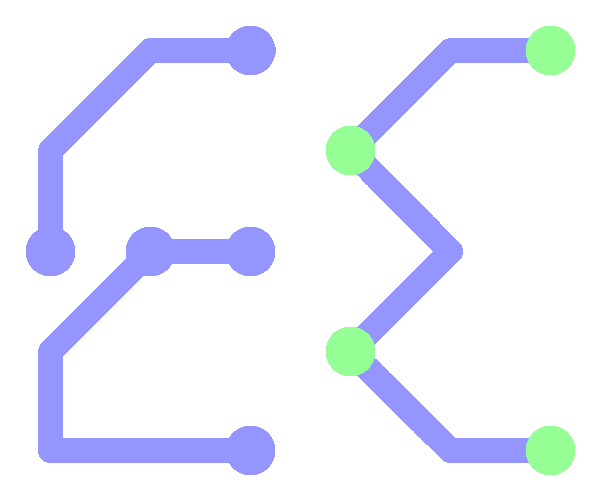
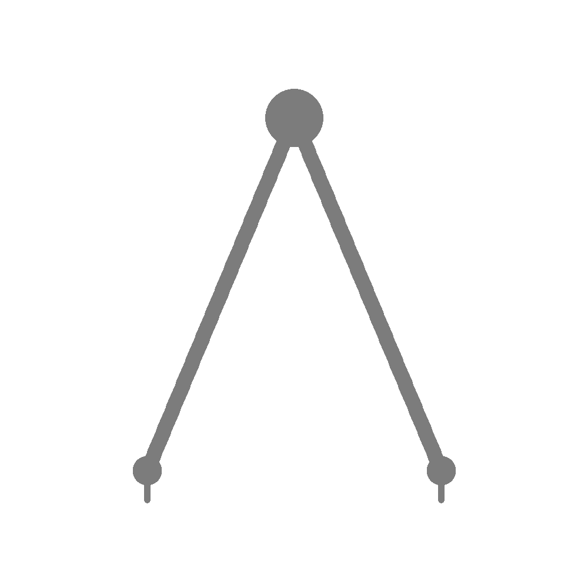

Skills¶
{kind=link}
Microcontrollers & Firmware¶
I generally prefer a layered architecture in order to reduce the mind share required in order to complete portions of an application. This development method often leads to code which emphasizes function over cyclic efficiency.
I have successfully deployed each of the below architectures into production:
PIC24/dsPIC33 series development in C, assembly
PIC10/12/16/18 series development in assembly
MSP430 series development in C
STM32F series development in C
I have successfully deployed firmware implementing motor control algorithms, communication protocols (RS-422, RS-485, wireless), and test hardware. I have written safety-critical code, including full code documentation.
{kind=link}
Electrical Engineering¶
I have been responsible for all aspectes of electrical design, from schematic entry, component selection, through layout and cost optimization. Softwares that I have experience with:

OrCAD Schematic Entry
Cadence PCB Editor
KiCAD Schematic/Layout
Altium Schematic Entry
Familiarity with DO-178 software design activities
Familiarity with design to meet DO-160
{kind=link}
Mechanical Engineering¶
I acquired a hobby of 3D printing during the early days of the rising hobbyist 3D printing. In addition, I had a mentor who allowed me to design mechanical parts and features that eventually made it into production giving me basic - but not comprehensive - mechanical design skills.
SolidWorks
{kind=link}
Office Productivity¶
The majority of report generation activities are conducted utilizing MS Word or Word-like software. I generally prefer to utilize styles within the document structure as this leads to a highly maintainable document which is inherently organized and beautifully exported to PDF.
MS Office Suite
LibreOffice Suite

Software Development¶
My introduction to software was as a firmware developer. As I continued to develop my skills, I found it necessary to learn other languages in order to become a better firmware developer. Additionally, through that process, I was further exposed to different souce control and development methods which increased my productivity and value in my various roles.
Git¶
I manage a small number of open-source projects. Most of these started out as useful scripts that I found myself utilizing over and over. None of the projects have “taken off”, but many of them have users and have merged pull requests on GitHub. Amongst the git-related skills:
C¶
My skills in C have been primarily focused on microcontroller firmware development and not on application development.
Python¶
Python as become a favored language for its extraordinary flexibility in a number of applications. I have utilied Python for complimentary testing applications, automated manufacturing testing, backend web development, and data analysis.
Sphinx - as evidenced by this document
Pyserial - interfacing with hardware; communication protocols
GUI - tkinter
Flask, including flask blueprints
Application deployment - no external dependencies
Automated test development for manufacturing environments
Jupyter Notebooks - utilized for basic data analysis
PyTest for automated software testing
Misc¶
Markdown
reStructured Text
Spaces, not tabs
GIMP (basic image manipulation)